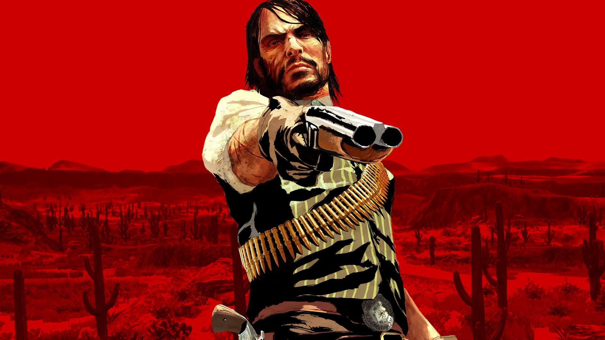
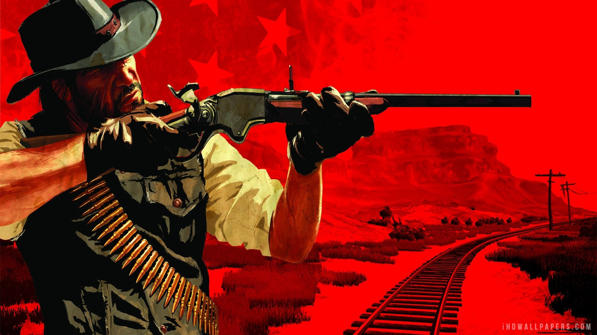
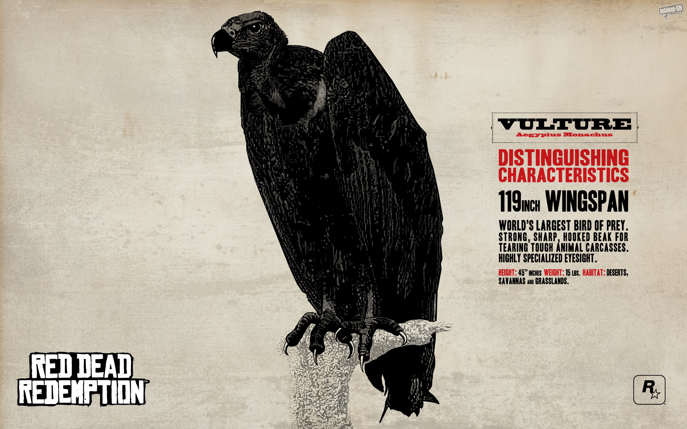
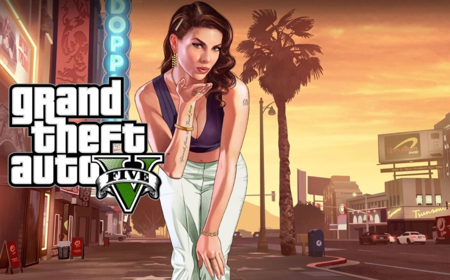

RED DEAD REDEMPTION
No ano de 1911, John Marston, um ex fora da lei, é forçado a trabalhar para o Escritório de Investigação depois destes terem tomado sua esposa e filho como reféns. Os agentes federais afirmam que Marston receberá anistia caso ele traga os antigos membros de sua gangue ainda vivos para a justiça.
Bastante desejado por muitos fãs da Rockstar Games, um remaster de Red Dead Redemption pode ser anunciado oficialmente pela empresa em agosto deste ano. Quem afirma isso é o insider Colin Moriarty, que comentou o assunto em uma participação recente no podcast Sacred Symbols, da Last Stand Media.
Segundo ele, os movimentos envolvendo uma nova classificação do jogo na Coreia do Sul são realmente provas de que a desenvolvedora trabalha com um relançamento. Ele afirma que o produto que vai chegar às lojas é uma remasterização, cujo anúncio oficial não deve demorar muito tempo para acontecer.
Outras evidências de que Red Dead Redemption pode ganhar uma nova versão surgiram no Social Club da Rockstar Games. No entanto, uma investigação mais profunda revelou que ele não foi o único jogo a receber ícones novos para suas conquistas, o que acabou jogando um balde d’água nos rumores envolvendo o game.
Red Dead Redemption segue sendo um dos games mais queridos da Rockstar
Lançado em 2010, Red Dead Redemption conta a história de John Marston, um ex-criminoso que decide abandonar sua vida passada para viver tranquilamente com sua mulher e com seu filho pequeno. Pressionado por agentes da lei, ele é obrigado a iniciar uma caçada contra a antiga gangue da qual fazia parte, tendo como objetivo final capturar ou matar o temido Dutch van der Linde.
Apesar de o game ser bastante elogiado, ele nunca ganhou um relançamento (como aconteceu com Grand Theft Auto V) ou remasterização. A única forma oficial de jogá-lo atualmente sem recorrer a emuladores é através da retrocompatibilidade do Xbox, visto que ele foi retirado no fim do ano passado do catálogo de streaming da PlayStation Plus.
Rumores sobre a chegada de uma versão atualizada do game são antigos, e em certo ponto surgiu a informação de que a Rockstar Games teria cancelado o projeto. Essa decisão teria sido tomada pelo desejo da desenvolvedora de focar todos os seus esforços na criação de Grand Theft Auto VI, cuja data de lançamento ainda é desconhecida.
Conteudo Relacionado

GRAND THEFT AUTO V
O jogo se passa no estado ficcional de San Andreas, com a história da campanha um jogador seguindo três criminosos e seus esforços para realizarem assaltos sob a pressão de uma agência governamental. O mundo aberto permite que os jogadores naveguem livremente pelas áreas rurais e urbanas de San Andreas.